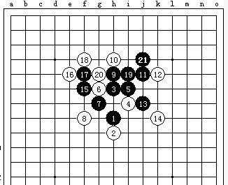

计算杀棋的思路
#1 计算杀棋的思路 作者：有志青年 发表时间：2006-6-1 16:41:11
黑先如何胜?可以在线打谱，随意点。
#2 Re:计算杀棋的思路 作者：有志青年 发表时间：2006-6-1 16:42:35
#3 Re:计算杀棋的思路 作者：光辉 发表时间：2006-6-1 17:10:12
J7，J6，J4，I5，K6，H3。#4 Re:计算杀棋的思路 作者：光辉 发表时间：2006-6-1 17:14:26
和标准答案不一样，但我这么做也是杀。应该是另一种解法。#5 Re:计算杀棋的思路 作者：鼠标 发表时间：2006-6-3 9:07:49
为什么看不到#6 Re:计算杀棋的思路 作者：dyf44 发表时间：2006-6-5 18:15:46
看不到#7 Re:计算杀棋的思路 作者：梦之岛黄飞鸿 发表时间：2006-6-6 9:14:22
让我来看看是不是与答案一样#8 Re:计算杀棋的思路 作者：梦之岛黄飞鸿 发表时间：2006-6-6 9:16:44
思路是一样的呀。#9 Re:计算杀棋的思路 作者：ddrwei 发表时间：2006-6-6 15:49:23
1321#10 Re:计算杀棋的思路 作者：冰乐爽鱼 发表时间：2006-6-22 6:41:36
看看
#11 Re:计算杀棋的思路 作者：4321 发表时间：2006-6-25 1:15:43
11#12 Re:计算杀棋的思路 作者：天屎下饭 发表时间：2006-6-25 6:07:47
想半天，很是费力，看来我棋力低的很啊#13 Re:计算杀棋的思路 作者：东方一步 发表时间：2006-6-27 10:50:35
回复#14 Re:计算杀棋的思路 作者：求学者 发表时间：2006-7-3 17:51:04
J7,J8#15 Re:计算杀棋的思路 作者：fuzj 发表时间：2006-7-3 21:49:43
kankan#16 Re:计算杀棋的思路 作者：天涯游子 发表时间：2006-7-11 12:24:52
这样走不知道对不对
J7 K6 H3 G4 F5 G5 E5 冲四活三成功
注:如黑J7时白G4,则黑J8 K8冲四活三胜
#17 Re:计算杀棋的思路 作者：天涯游子 发表时间：2006-7-11 12:27:18
<TABLE width="90%" border=0><TBODY><TR><TD>有志青年
</TD></TR></TBODY></TABLE>帮我看看,我的走法跟你的答案不一样,我的行不行啊
#18 Re:计算杀棋的思路 作者：强迫怎么 发表时间：2006-7-17 21:46:19
asd#19 Re:计算杀棋的思路 作者：天涯游子 发表时间：2006-7-18 14:28:44
有志青年你能不能帮忙看看啊,我做得对不对,和你的答案不一样的
#20 Re:计算杀棋的思路 作者：455 发表时间：2006-7-19 9:18:45
j7 k8 6f 4j 6j 5i 3k 5f 3f#21 Re:计算杀棋的思路 作者：cuikai 发表时间：2006-7-19 19:44:26
dd#22 Re:计算杀棋的思路 作者：rq1590 发表时间：2006-7-19 20:14:10
hehe zhege bu hao shuo a#23 Re:计算杀棋的思路 作者：菜鸟翻身 发表时间：2006-7-19 21:12:28
看看和我的解法有什么不一样？#24 Re:Re:计算杀棋的思路 作者：有志青年 发表时间：2006-7-24 10:56:29
引用：
原文由 天涯游子 发表于 2006-7-11 12:24:52 :这样走不知道对不对
J7 K6 H3 G4 F5 G5 E5 冲四活三成功
注:如黑J7时白G4,则黑J8 K8冲四活三胜
完全正确！
#25 Re:Re:计算杀棋的思路 作者：有志青年 发表时间：2006-7-24 11:05:01
#26 Re:计算杀棋的思路 作者：broook 发表时间：2006-7-24 11:19:12
想不出来
#27 Re:计算杀棋的思路 作者：泉之潮 发表时间：2006-7-29 12:01:54
J7J4
I5
F6
F5
#28 Re:计算杀棋的思路 作者：emile 发表时间：2006-7-30 17:08:16
还好#29 Re:计算杀棋的思路 作者：黄太子 发表时间：2006-8-2 14:40:45
我顶#30 Re:计算杀棋的思路 作者：弗雷德里希 发表时间：2006-8-3 20:57:26
看看答案
#31 Re:计算杀棋的思路 作者：xialin 发表时间：2006-8-4 16:31:15
做杀先？#32 Re:计算杀棋的思路 作者：xialin 发表时间：2006-8-4 16:33:34
13手做杀也行#33 Re:计算杀棋的思路 作者：ntren 发表时间：2006-8-10 20:56:58
kk#34 Re:计算杀棋的思路 作者：娅娅 发表时间：2006-8-12 1:41:39
对答案捏~
#35 Re:计算杀棋的思路 作者：xr__ 发表时间：2006-8-12 22:52:30
Re:计算杀棋的思路让我来看看是不是与答案一样
#36 Re:计算杀棋的思路 作者：大头鱼 发表时间：2006-8-13 21:02:35
看看结果。#37 Re:计算杀棋的思路 作者：清逸 发表时间：2006-8-13 23:39:43
学习~~
#38 Re:计算杀棋的思路 作者：朗星 发表时间：2006-8-14 1:05:04
J7 J6 K6 H3 G4 F5 E5或者J7 J6 K6 H3 F5双杀#39 Re:计算杀棋的思路 作者：三眼蟹 发表时间：2006-8-16 14:09:11
谢谢#40 Re:计算杀棋的思路 作者：combra 发表时间：2006-8-25 8:33:03
aaa#41 Re:计算杀棋的思路 作者：marddr 发表时间：2006-8-26 8:46:55
J7,J6,J4,F6,I5,F5,F3
#42 Re:计算杀棋的思路 作者：我是新手 发表时间：2006-8-27 14:20:42
看看#43 Re:计算杀棋的思路 作者：pwxcmy 发表时间：2006-8-27 16:45:57
xxxxxxxxxxxxxxxxxxxxxxxxxxxxxxxxxxxxxxxxxxxxxxx#44 Re:计算杀棋的思路 作者：liyach 发表时间：2006-8-29 0:56:55
#45 Re:计算杀棋的思路 作者：zzp197 发表时间：2006-8-31 19:52:57
看看是否与我想的一样#46 Re:计算杀棋的思路 作者：啊丫呀 发表时间：2006-9-5 13:03:26
不好意思，我想问一个有点笨的问题，什么是在线打谱？我一知半解。#47 Re:计算杀棋的思路 作者：cha 发表时间：2006-9-5 14:46:35
看看#48 Re:计算杀棋的思路 作者：ベ☆ve寶々 发表时间：2006-9-5 17:05:55
回复`!!!!~~~~~~#49 Re:计算杀棋的思路 作者：wsry 发表时间：2006-9-5 17:18:36
nan ,bu hui#50 Re:计算杀棋的思路 作者：棋迷 发表时间：2006-9-18 20:18:53
学习#51 Re:计算杀棋的思路 作者：杨华明 发表时间：2006-9-19 16:53:28
应该对的#52 Re:计算杀棋的思路 作者：hhxx18 发表时间：2006-9-20 5:38:33
kan kan#53 Re:计算杀棋的思路 作者：五子小菜 发表时间：2006-10-2 18:25:48
没想出来!只好看答案了：（#54 Re:计算杀棋的思路 作者：快乐无忧 发表时间：2006-10-3 13:33:00
看不到#55 Re:计算杀棋的思路 作者：xzlht 发表时间：2006-10-14 10:50:14
b
#56 Re:计算杀棋的思路 作者：那人 发表时间：2006-10-20 9:46:43
想不出来了
#57 Re:计算杀棋的思路 作者：combra 发表时间：2006-10-22 10:24:49
有吗
#58 Re:计算杀棋的思路 作者：好累 发表时间：2006-10-24 16:13:04
看kan#59 Re:计算杀棋的思路 作者：初学者 发表时间：2006-10-24 21:20:39
我要学习。#60 Re:计算杀棋的思路 作者：格林鲍尔 发表时间：2006-11-4 19:49:10
不知对不对
#61 Re:计算杀棋的思路 作者：tyghbn 发表时间：2006-11-5 7:19:27
好的#62 Re:计算杀棋的思路 作者：樱花清晨 发表时间：2006-11-5 9:42:38
如何看得见#63 Re:计算杀棋的思路 作者：zhc120 发表时间：2006-11-5 11:12:08
有答案的吗？#64 Re:计算杀棋的思路 作者：渡你归西 发表时间：2006-11-5 15:40:40
往往#65 Re:Re:计算杀棋的思路 作者：踏雪寻梅 发表时间：2006-11-5 19:02:28
五子棋好看!!#66 Re:计算杀棋的思路 作者：踏雪寻梅 发表时间：2006-11-5 19:10:15
 j7j6k6k5i5
j7j6k6k5i5
#67 Re:计算杀棋的思路 作者：偷贼的井盖 发表时间：2006-11-14 18:29:37
看一下
#68 Re:计算杀棋的思路 作者：刘小云 发表时间：2006-11-20 13:48:25
好东西
#69 Re:计算杀棋的思路 作者：刘小云 发表时间：2006-11-20 13:49:59
好东东啊 就是看不到#70 Re:计算杀棋的思路 作者：110q 发表时间：2006-11-20 14:00:55
j7,j6,以后追杀。#71 Re:计算杀棋的思路 作者：菜鸟旗手 发表时间：2006-11-20 14:16:30
看答案喽#72 Re:Re:计算杀棋的思路 作者：冲窝兮 发表时间：2006-11-20 21:29:38
看答案#73 Re:Re:计算杀棋的思路 作者：mhj052 发表时间：2006-11-22 1:20:13
好好好#74 Re:计算杀棋的思路 作者：那一剑的风情 发表时间：2006-11-24 23:08:04
我看看#75 Re:计算杀棋的思路 作者：lls104 发表时间：2006-11-25 11:10:55
看看答案。#76 Re:计算杀棋的思路 作者：悄然 发表时间：2006-11-25 13:15:40
 我走了六步杀Ｊ７ Ｊ４ Ｉ５ Ｆ６ Ｆ３ Ｆ５
我走了六步杀Ｊ７ Ｊ４ Ｉ５ Ｆ６ Ｆ３ Ｆ５
#77 Re:计算杀棋的思路 作者：mycele 发表时间：2006-11-25 17:42:59
re#78 Re:计算杀棋的思路 作者：高小鱼 发表时间：2006-11-26 23:50:13
kankan#79 Re:计算杀棋的思路 作者：毛二妮 发表时间：2006-11-27 17:28:08
2222#80 Re:计算杀棋的思路 作者：yybns 发表时间：2006-11-29 10:44:10
#81 Re:Re:计算杀棋的思路 作者：邓邓 发表时间：2006-11-29 15:40:52
厉害！多多关注
#82 Re:计算杀棋的思路 作者：笑遥王 发表时间：2006-11-30 18:03:02
不到#83 Re:计算杀棋的思路 作者：golgyy 发表时间：2006-11-30 19:30:03
我是: J7 F6 F3 F5 I5 然后J4点冲四跳四
因为我不知道怎么把我的图弄上来,就把步子说出来了，我这样下的话白子应该是被动的吧
#84 Re:计算杀棋的思路 作者：温差 发表时间：2006-12-1 21:30:16
J7 J6#85 Re:Re:计算杀棋的思路 作者：17号蓝星仔 发表时间：2006-12-3 23:21:32
引用：
原文由 梦之岛黄飞鸿 发表于 2006-6-6 9:16:44 :
思路是一样的呀。
#86 Re:计算杀棋的思路 作者：破网的蜘蛛 发表时间：2006-12-8 13:35:52
比较简单
#87 Re:计算杀棋的思路 作者：luobo 发表时间：2006-12-15 9:18:43
rerererere#88 Re:计算杀棋的思路 作者：344572 发表时间：2006-12-15 11:40:48
我是初学者
#89 Re:计算杀棋的思路 作者：344572 发表时间：2006-12-15 11:41:53
看不到呀#90 Re:计算杀棋的思路 作者：雨季 发表时间：2006-12-18 18:47:01
看答案
#91 Re:计算杀棋的思路 作者：李逍遥 发表时间：2006-12-22 12:40:41
不知道对不对
#92 Re:计算杀棋的思路 作者：szxl00 发表时间：2006-12-23 23:57:58
让我看看答案#93 Re:计算杀棋的思路 作者：V 发表时间：2006-12-25 4:57:58
顶
#94 Re:计算杀棋的思路 作者：棋乐穷 发表时间：2006-12-29 13:32:45
谢谢#95 Re:计算杀棋的思路 作者：天香小雪 发表时间：2007-1-3 0:42:41
J7,J4,I5,F6,F5,F3#96 Re:计算杀棋的思路 作者：金福 发表时间：2007-1-7 14:34:07
很好啊，就是看不见啊。#97 Re:计算杀棋的思路 作者：金福 发表时间：2007-1-8 19:07:58
看看吧！#98 Re:计算杀棋的思路 作者：ipqcel 发表时间：2007-1-21 9:04:40
好好好#99 Re:计算杀棋的思路 作者：悬壶 发表时间：2007-1-25 21:07:55
J7，J6，J4，I5，K6，H3。#100 Re:计算杀棋的思路 作者：林动奇 发表时间：2007-1-26 1:58:52
看看是不一样的#101 Re:计算杀棋的思路 作者：li3000 发表时间：2007-1-28 0:42:24
hao#102 Re:计算杀棋的思路 作者：休闲号 发表时间：2007-4-11 10:58:48
j7 j8 k4 l5#103 Re:计算杀棋的思路 作者：梦魇恐龙 发表时间：2007-5-3 17:45:55
f6 j7 j4 i5 f5 f3#104 Re:计算杀棋的思路 作者：天上掉个馅饼 发表时间：2007-5-10 12:08:31
得解,,这种方式我喜欢,以后多用这方式练习就好了#105 Re:计算杀棋的思路 作者：珊瑚草 发表时间：2007-5-23 16:53:13
vvvvvvvvvvvvvv#106 Re:计算杀棋的思路 作者：yzxw 发表时间：2007-6-24 23:40:42
我的水平就看看吧#107 Re:计算杀棋的思路 作者：fengle 发表时间：2007-6-24 23:43:10
请问F5,应该行吧
#108 Re:计算杀棋的思路 作者：风の情深 发表时间：2007-7-18 15:23:18
 我想的和答案差不多! 呵呵!
我想的和答案差不多! 呵呵!
#109 Re:计算杀棋的思路 作者：lilied 发表时间：2007-7-21 10:19:17
J7 J6 F5 H3一子双杀#110 Re:Re:计算杀棋的思路 作者：mpengl 发表时间：2007-8-20 8:49:12
你这样放 白棋也可以放J4 为什么给你丢着啊 光辉
#111 Re:计算杀棋的思路 作者：双队长 发表时间：2007-8-28 11:47:47
呵呵 容易啊 我都杀了